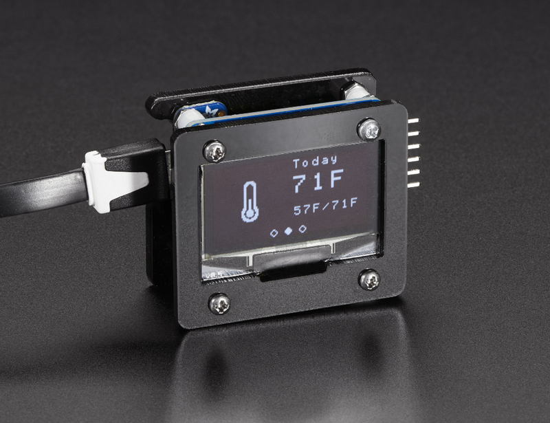

I came across a tutorial in the Adafruit Learning System about a WiFi-connected Weather Display that caught my eye.

The tutorial shows how to use Huzzah - Adafruit’s breakout for the ESP8266 WiFi module - to display weather data on an OLED screen. The project is listed as an intermediate level project, because it requires a PHP script to be running on a separate computer or Raspberry Pi to translate data from a weather forecast API to a format the microcontroller can handle.
When I looked into the details, I found the tutorial on Adafruit was based on another project by Dani Eichhorn; I’ll talk about both projects here.
Hardware
The core hardware of the project is simple: an ESP8266 breakout board, monochrome 1.3” 128x64 SSD1306 OLED display with I2C connection, some jumper wires and a connection to external power over USB.
The original project uses a NodeMCU board. The board has not only an ESP8266 chip but also a microUSB jack and USB-Serial converter chip so you can program the chip directly over USB and power the project through USB. The parts Dani used come with pins already soldered, ready to connect with jumper wires. This makes for a much easier to assemble project, but there will be a mess of wires behind the OLED display that can’t be contained in a small enclosure. The author is selling the parts you need for the project as a reasonably priced kit.
The Adafruit tutorial adds a few more parts - required as their Huzzah ESP8266 breakout doesn’t have a USB port for programming or power - and their tutorial requires soldering all the parts together. On the plus side, the soldering leaves the assembled project in a more compact form. The tutorial includes a design for a case to hold everything if you want to source the laser cut acrylic and fasteners yourself.
Software
The Arduino code is well written and easy to understand. There are three screens that cycle between the current weather, current temperature, and tomorrows forecast, and are populated with a combination of text and an icon. The icons are mono-color bitmaps converted to XBM (X Bitmap) format which uses 1 bit per pixel, and is stored as an array for easily including with the source code.
The display is driven over I2C with a custom OLED driver class that is specifically designed to scroll through several frames of information. The class doesn’t do temporary storage of any frames, they are written to the display directly. During frame transitions, the graphics for the previous and next frames are generated and written out to the display at each step in the transition animation. This is a clever way to save memory while seamlessly transitioning between the frames.
The PHP script is used to convert the weather data to a format that is easier to store and parse on the ESP8266. When requested by an HTTP GET request from the microcontroller, the script requests a JSON object containing the weather from the forecast.io API, then responds to the micocontroller with just the necessary values as key-value pairs that are easy for the microcontroller to parse.
What’s unique about this project?
This isn’t the first ESP8266 weather display out there, but it’s the first I’ve seen that adds nice graphics to the display including transitions between frames, and does it all with the ESP8266 module, and not a separate Arduino or similar microcontroller.
The Adafruit version builds on the original project with an enclosure and compact layout, and well documented tutorial that shows how to put everything together.
Suggestions for the Next Version
I’d like to see animated weather icons, like the ones used by the forecast.io weather service on their site. The I2C connection to the display may be too slow for smooth animation, but there are plenty of pins on both the Node MCU and Huzzah modules to switch to a faster SPI connection which can update fast enough for smooth animation.
It would also be nice to figure out a way to make installing the PHP script unnecessary or easy for a beginner, to make the project easier to replicate. If the ESP8266 can’t handle parsing data from the weather API directly, maybe the tutorial could explain how to install the PHP script for someone that’s not familiar with running PHP scripts.
The Adafruit version requires more parts and tools as their Huzzah WiFi module doesn’t include a USB connection for programming or powering the module. I have to imagine they are working on a more full-featured product to compete with the NodeMCU and similar ESP8266 modules, and it would be nice to see their tutorial updated to use the new module if one becomes available.